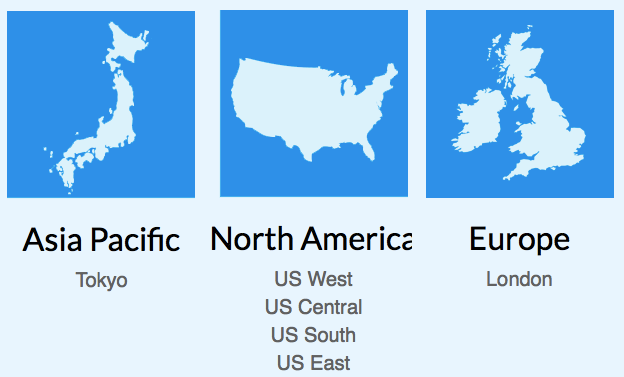

只有新注册用户才能使用这个优惠！
使用方法：Promo Code 输入 BOOTSTRAPPEDFM 或者 BSFM50 ，Referral Code 输入 5469f6c73370f837de1636a76923c497ed08ab24 送50美元给你的条件是你至少要充值5美元，目前linode最便宜的VPS是月付10美元，如果你自己充值10美元的话一下子可以使用半年了！
Linode.com是一家美国VPS主机提供商，成立于2003年，提供基于Xen虚拟技术的Linux VPS，在国外和国内用户中的口碑不错。 VPS配置每年都会有不同程度的升级，每次升级都会令人意想不到，已成为VPS业界的标杆。
目前有日本东京、美国Fremont，Dallas、Newark、Atlanta、英国伦敦6个机房可供选择。日本东京和Fremont,CA对国内访问速度很好。
ping及下载测试地址：点击查看.
A：由于Linode是Linux的VPS，所以需要有一定的Linux操作功底。Linode很适合作为Linux入门的材料。但对不熟悉shell的朋友，可能一开始安装软件、配置服务器都比较困难。当然，对不熟悉Linux服务器的人，也无疑是一次锻炼的机会。我就是在不熟悉Linux的情况下开始用Linode的。而且，Linode上也有相关的Linux教程：http://library.linode.com/using-linux
A：Linode的VPS是相当价廉的VPS，价格要比Slicehost便宜约30%，比起MediaTemple就更加有优势。Linode的VPS有多种配置，最便宜一款$19.95。年付打9折。所有VPS配置列表可以在Linode首页找到。
A：每个Linode都有独立IP，这至少可保障你的网站不会被别人牵连。如果自己的IP被墙了，购买一个extra IP需要每个月1美金。BTW，可以在Linode上搭建VPN，极大方便平日流连Youtube、Facebook等网站。
A：linode的扣费政策在EST时间即美国东部时间早上进行扣费,EST时间与北京时间相差12个小时,比如我们北京时间现在是中午12点,而美国东部时间那里则是零点整
A：Linode自己提供了backup的服务，按照不同等级的Plan进行收费。